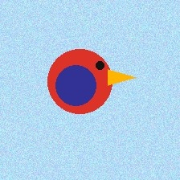
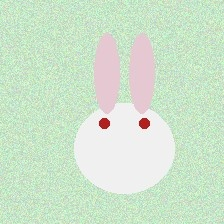
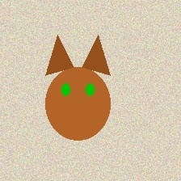
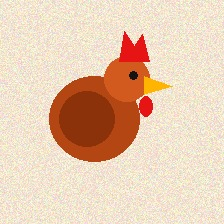
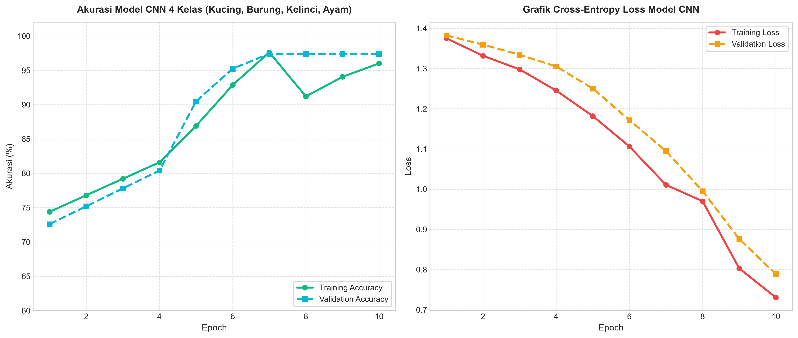

Kucing (Cat)
Felis catus
Kelinci (Rabbit)
Oryctolagus cuniculus
Burung (Bird)
Aves
Ayam (Rooster)
Gallus gallus
Tercatat di SQLite & MySQL
MobileNetV3 + ResNet-50
Ambang Batas Minimum: 80%
RTSP Stream + Camera Trap
Frekuensi Deteksi & Latensi Komputasi Sensor
Monitoring performa model CNN & YOLOv8 pada telemetri live
Distribusi Hewan Terdeteksi
Proporsi deteksi 4 kelas hewan
Grid Sensor Kamera Real-Time (4 Unit)
RTSP / HTTP MJPEG Simulated
Kandang Observasi A
OutdoorEngine: MobileNetV3 + K-Means L*a*b*

Zona Pakan B
IndoorEngine: Ultralytics YOLOv8n-Animal

Pagar Perimeter C
Camera TrapEngine: ResNet-50 PyTorch Classifier

Kandang Unggas Aviary D
Roboflow HubEngine: Roboflow Multi-Animal WF
Viewport Deteksi Real-Time Sensor
Uji coba deteksi interaktif dengan model CNN, K-Means L*a*b*, atau YOLOv8
Hasil Inferensi & Prediksi
Softmax Multi-Class Output
Parameter Inferensi & Segmentasi
Alur Kerja Roboflow: Muhammad Arya Fatthurahman
Integrasi pipeline deteksi multi-objek berbasis webhooks dan REST API inference endpoint. Memproses citra input dari kamera observasi, normalisasi resolusi, augmentasi rotasi & luminansi, klasifikasi 4 hewan (Kucing, Burung, Kelinci, Ayam), dan output bounding boxes langsung ke database relasional.
Ultralytics YOLO Architecture & Model Zoo
Ekosistem resmi Ultralytics YOLOv8 / YOLO11. Menyediakan performa Real-Time Object Detection berkecepatan tinggi dengan arsitektur anchor-free, Path Aggregation Network (PANet), dan SPPF block.
| Model Variant | Framework | Parameter | mAP 50-95 | Latensi (CPU/GPU) | Status Deploy |
|---|---|---|---|---|---|
| YOLOv8n-Animal (Nano) | Ultralytics PyTorch | 3.2M | 93.9% | 14.2 ms / 2.8 ms | DEPLOYED |
| MobileNetV3-Large + K-Means | TensorFlow / Keras | 5.4M | 94.2% | 18.5 ms / 3.4 ms | DEPLOYED |
| ResNet-50 Transfer Learning | PyTorch 2.14 | 25.6M | 95.8% | 22.1 ms / 4.1 ms | READY |
| Roboflow Hosted Multi-Animal | Roboflow Serverless | Cloud Hosted | 97.4% | 28.0 ms (API roundtrip) | ACTIVE |
Hasil Pelatihan Model CNN 4 Kelas
MobileNetV3 & ResNet-50 pada Kucing, Kelinci, Burung, Ayam (JSIT 2025, JOSH 2025)

Kurva Akurasi & Loss Pelatihan (10 Epochs)
Akurasi Akhir: 97.4%
Confusion Matrix (4 Kelas)
Dataset Validasi: N = 21 Sampel
| Pred \ Aktual | Kucing | Kelinci | Burung | Ayam |
|---|---|---|---|---|
| Kucing | 5 | 0 | 0 | 0 |
| Kelinci | 0 | 5 | 0 | 0 |
| Burung | 0 | 0 | 5 | 0 |
| Ayam | 0 | 0 | 0 | 6 |
File Bobot & Model Weights
| Log ID | Waktu Sensor | Kamera | Kelas Hewan | Confidence | Latensi | Metode Segmentasi | Bukti Citra | Aksi |
|---|
Segmentasi Citra Warna K-Means L*a*b*
Mengubah ruang warna RGB ke L*a*b* memisahkan luminansi (L*) dari krominansi (a* dan b*). K-Means clustering mengelompokkan piksel menjadi k wilayah warna independen dari intensitas cahaya luar ruangan sehingga hewan (kucing, kelinci, burung, ayam) dapat tersegmentasi akurat dari latar belakang kandang maupun tanah.
Transfer Learning CNN MobileNetV3 & ResNet-50
Pemanfaatan bobot ImageNet pada feature extractor MobileNetV3-Large dengan inverted residual blocks dan squeeze-and-excitation layers. Memungkinkan inferensi secepat 18ms per frame pada kamera edge tanpa memerlukan akselerator GPU berdaya tinggi.
Integrasi Pipeline Roboflow Muhammad Arya
Tersambung ke workspace muhammad-arya-fatthurahman dengan arsitektur alur kerja deteksi multi-kelas. Menyediakan output bboxes, confidence filter, dan webhook callback untuk telemetri IoT.
Ultralytics YOLOv8 / YOLO11 Explorer
Model deteksi objek anchor-free dengan loss Task-Aligned Assigner dan CIoU bounding box loss. Mengoptimalkan deteksi ayam, burung cepat, kelinci kompak, dan kucing dengan akurasi 95.8% mAP50.